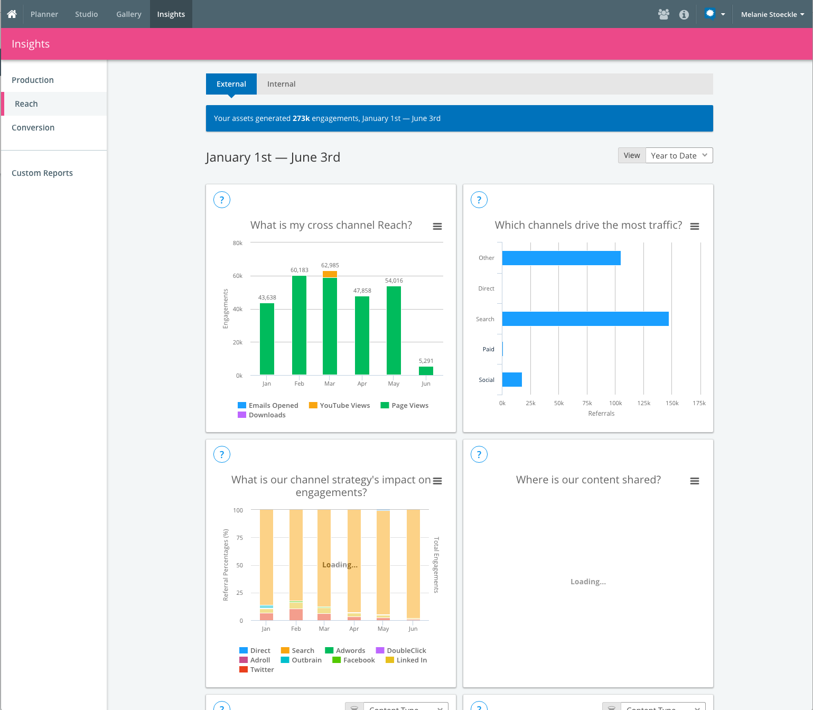
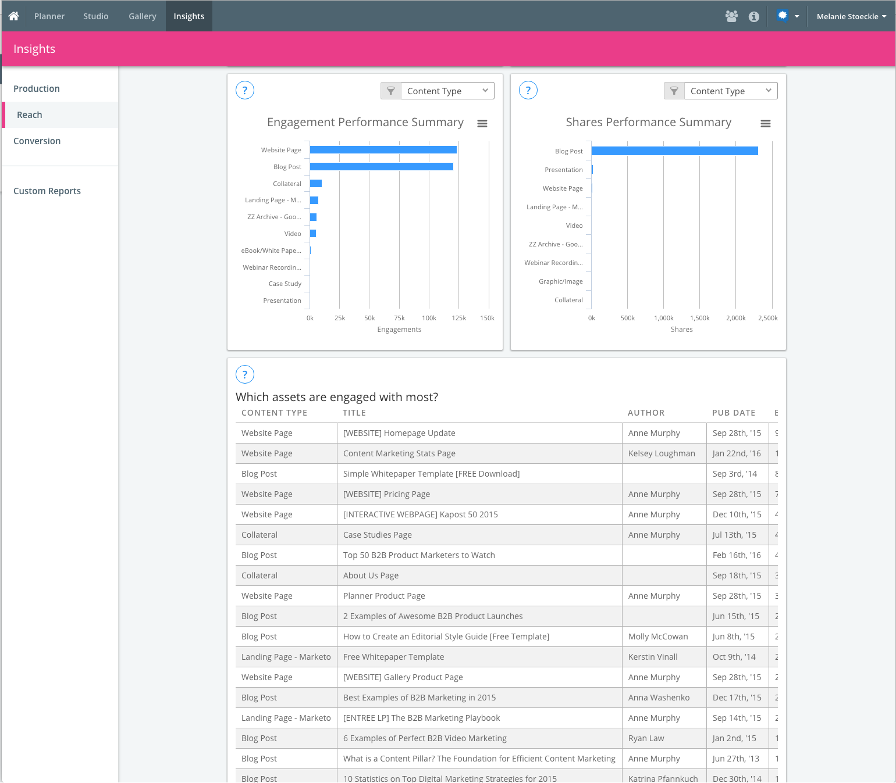
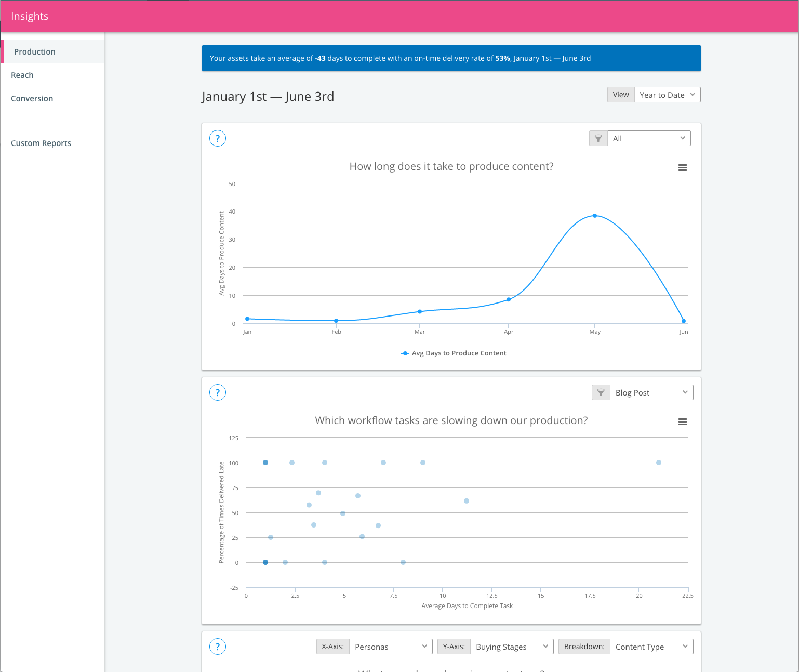
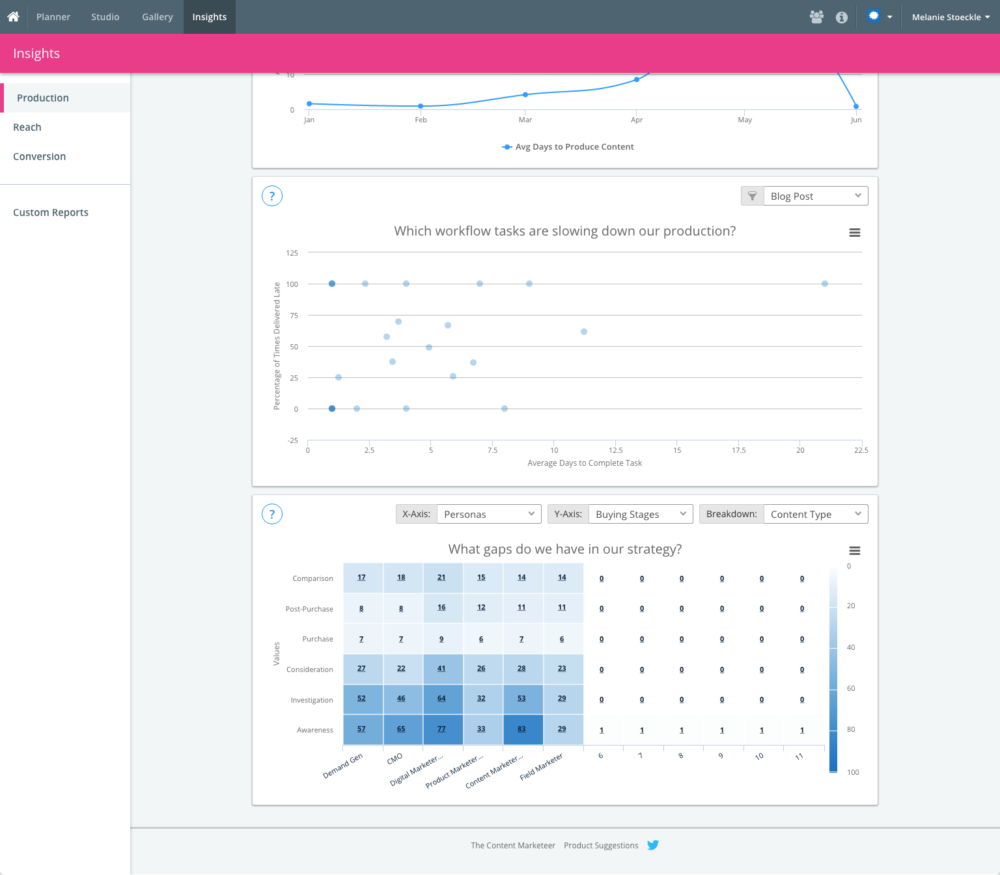
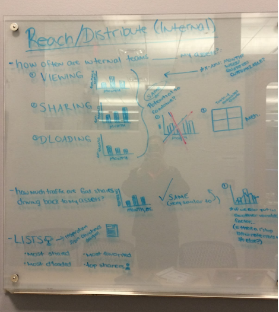
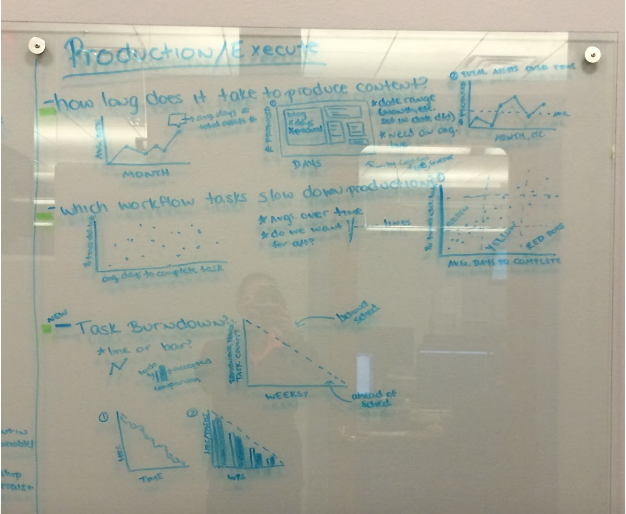
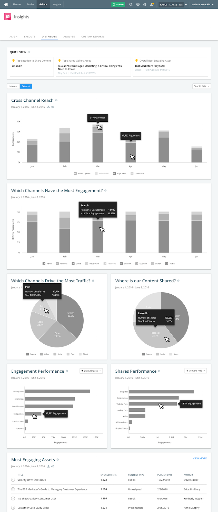
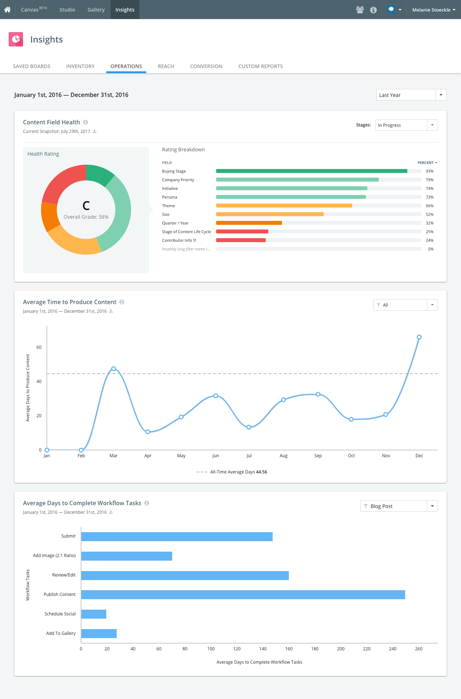

<div class="content">
	<div class="main">

		<div id="projects-main-gray">
			<h1 class="main-title">Kapost Insights Revisualization</h1>
			<div class="extraPadding"></div>
		</div>

		<p>The analytics section of our software needed some serious love.  Check out what we were dealing with:</p>

		<figure>
			
			
			
			
		</figure>

		<p><strong>Goal:</strong> Modernize the Insights app and make data visualizations more digestible for our customers, so they can more easily gather the analytics data they need.</p>

		<hr>

		<p>I worked with our Insights Product Manager to brainstorm and whiteboard potential concepts for the charts we had and the new charts we wanted to build.</p>

		<figure>
			
			
			
		</figure>

		<p>I created low-fidelity screens for each of the "tabs" (or categories) we have for our Insights.  From there, we presented the charts to the rest of the stakeholders (Director of Product, CTO, Director of Design, Lead Engineer, etc.) and started narrowing the charts and design direction down.</p>

		<p>After this point in time, I had transitioned over from the Design team to the Product team as the Product Owner for two development teams at Kapost, including Insights.  This enabled me to take this project from the early design brainstorming stages all the way to releasing the project to all of our customers, so it holds a special place in my heart.  I worked closely with the developers who were implementing the front-end changes and continued to make the design decisions for what was left.</p>

		<figure>
			
		</figure>

		<p>The feature was released to customers in January 2017, and the usage of Insights more than tripled in two months.  Below is a preview of the end result of the product:</p>

		<figure>
			
			<figcaption>This example shows a new chart on top that we designed, tested and implemented.  The following two charts were existing and we worked to improve and modernize them.</figcaption>
		</figure>

	</div>
</div>